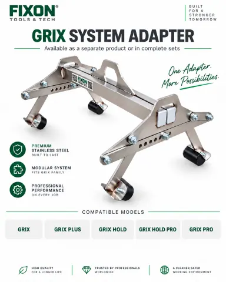

Mae FIXON yn gweithio gyda gweithgynhyrchwyr offer, siopau mawr a dosbarthwyr sy'n gwasanaethu contractwyr a chwmnïau adeiladu. Gyda'n gilydd, rydym yn dewis amrywiaeth cynnyrch cychwynnol bach, a ddewiswyd yn ofalus, ar gyfer gwerthiannau treial yn seiliedig ar fodel cwsmeriaid, deunyddiau a gwerthu'r partner.
FIXON 2026
Offer sy'n werth eu hychwanegu at eich ystod
Mae eich cwsmeriaid eisiau gwneud eu gwaith yn haws. Cyflwynwch offer FIXON iddynt ac agorwch gyfleoedd gwerthu newydd.
Gadewch i ni barhau i siarad


O'r sgwrs gyntaf i'r gwerthiant cyntaf
- Rydym yn dod i adnabod eich cwsmeriaid a'u gwaith.
- Rydym yn dewis offer ar gyfer eich ystod gyda'n gilydd.
- Cewch ostyngiad o 20% ar eich archeb gyntaf.
- Cewch ddeunydd a chymorth i ddechrau gwerthu.
- Rydych yn ehangu'r ystod yn ôl y galw a'r canlyniadau gwerthu.
Pam mae'n werth siarad?
Mae ein hystod yn tyfu
Edrychwch ar yr ychwanegiadau i'r ystod a dewiswch offer ar gyfer gwaith eich cwsmeriaid.

PROFILFIX 200FIXON-068-PROFILFIX-200Yn y deunydd ers: 2026-09

PROFILFIX 150FIXON-067-PROFILFIX-150Yn y deunydd ers: 2026-09

PROFILFIX 100FIXON-066-PROFILFIX-100Yn y deunydd ers: 2026-09

MONOX 3.0FIXON-065-MONOX-3-0Yn y deunydd ers: 2026-09

HARDTAP PAD 250 x 250FIXON-064-HARDTAP-PADYn y deunydd ers: 2026-09

SYSTEM ADAPTERFIXON-063-SYSTEM-ADAPTERYn y deunydd ers: 2026-09

GRIX SYSTEM ADAPTERFIXON-062-GRIX-SYSTEM-ADAPTERYn y deunydd ers: 2026-09

LiftX PROFIXON-061-LIFTX-PROYn y deunydd ers: 2026-09

HARDTAP MINI 8 kgFIXON-060-HARDTAP-MINI-8-KGYn y deunydd ers: 2026-09
Yn y deunydd ers: 2026-09 (1)
- EDGELOCK FIXON-057-EDGELOCK
Yn y deunydd ers: 2026-08 (7)
- BONUS GRIX PLUS x2 FIXON-059-BONUS-GRIX-PLUS-X2
- BONUS FIXON GRIX x2 FIXON-058-BONUS-GRIX-X2
- LevelFix Pro FIXON-056-LEVELFIX-PRO
- Odbojniki ochronne do GRIX HARD FIXON-054-ODBOJNIKI-OCHRONNE-DO-GRIX-HAR
- BRIX FIXON-046-BRIX
- AquaFix FIXON-045-AQUAFIX
- GRIX PRO FIXON-010-GRIX-PRO
Yn y deunydd ers: 2026-07 (51)
- Odbojnik do GRIX PLUS FIXON-055-ODBOJNIK-DO-GRIX-PLUS
- Odbojnik gumowy 60x30x22 mm FIXON-053-ODBOJNIK-GUMOWY-60X30X22MM
- UrbanRoot CUSTOM FIXON-052-URBANROOT-CUSTOM
- UrbanRoot INOX FIXON-051-URBANROOT-INOX
- UrbanRoot STEEL FIXON-050-URBANROOT-STEEL
- MONOX 8.0 FIXON-049-MONOX-8-0
- MONOX 6.0 FIXON-048-MONOX-6-0
- BRUKFILL FIXON-047-BRUKFILL
- CyrkielFix FIXON-044-CYRKIELFIX
- Zagęszczarka płytowa gruntu 120 kg 32 kN LONCIN FIXON-043-ZAGESZCZARKA-PLYTOWA-GRUNTU-12
- HARDTAP 20 kg FIXON-042-HARDTAP-20-KG
- HARDTAP 15 kg FIXON-041-HARDTAP-15-KG
- HARDTAP 10 kg FIXON-040-HARDTAP-10-KG
- HARDTAP 5 kg FIXON-039-HARDTAP-5-KG
- HARDTAP MINI FIXON-038-HARDTAP-MINI
- BLOCKLIFT 500 FIXON-037-BLOCKLIFT-500
- BLOCKLIFT 300 FIXON-036-BLOCKLIFT-300
- GRIPTOR PRO FIXON-035-GRIPTOR-PRO
- GRIPTOR FIXON-034-GRIPTOR
- HandLift FIXON-033-HANDLIFT
- LiftX FIXON-032-LIFTX
- RolLift FIXON-031-ROLLIFT
- WallFix FIXON-030-WALLFIX
- KrawFix FIXON-029-KRAWFIX
- KrawFix ROLLER FIXON-028-KRAWFIX-ROLLER
- KrawFix INOX FIXON-027-KRAWFIX-INOX
- FormFixMini FIXON-026-FORMFIXMINI
- FormFix 1250-2200 mm FIXON-025-FORMFIX-1250-2200-MM
- FormFix MAX FIXON-024-FORMFIX-MAX
- FormFix DUAL FIXON-023-FORMFIX-DUAL
- LevelFix FIXON-022-LEVELFIX
- KatFix PRO FIXON-021-KATFIX-PRO
- KatFix FIXON-020-KATFIX
- LineFix FIXON-019-LINEFIX
- FlatFix PLUS z rolką FIXON-018-FLATFIX-PLUS-Z-ROLKA
- FlatFix PLUS z plastikową podstawą FIXON-017-FLATFIX-PLUS-Z-PLASTIKOWA-PODS
- FlatFix PLUS Standard FIXON-016-FLATFIX-PLUS-STANDARD
- FlatFix Standard FIXON-015-FLATFIX-STANDARD
- FlatFix z plastikową podkładką FIXON-014-FLATFIX-Z-PLASTIKOWA-PODKLADKA
- FlatFix z rolką FIXON-013-FLATFIX-Z-ROLKA
- FlatFix DUO FIXON-012-FLATFIX-DUO
- Adapter do podnoszenia - system GRIX FIXON-011-ADAPTER-DO-PODNOSZENIA-SYSTEM-
- GRIX HARD FIXON-009-GRIX-HARD
- GRIX PLUS FIXON-008-GRIX-PLUS
- GRIX FIXON-007-GRIX
- GRIX HOLD FIXON-006-GRIX-HOLD
- GRIX HOLD PRO FIXON-005-GRIX-HOLD-PRO
- Zestaw KRAWĘŻNIK PRO FIXON-004-ZESTAW-KRAWEZNIK-PRO
- Zestaw KRAWĘŻNIKI FIXON-003-ZESTAW-KRAWEZNIKI
- Zestaw MASTER FIXON-002-ZESTAW-MASTER
- Zestaw LEVEL FIXON-001-ZESTAW-LEVEL
Mae'r mis yn nodi'r fersiwn gynharaf o'r deunydd y daethom o hyd iddi sy'n cynnwys y cynnyrch, nid ei ddyddiad lansio.
Gwelwch yr offer ar waith
Mae'r fideos yn dangos defnyddiau penodol. Cewch syniadau ar gyfer arddangosiad i'ch cwsmeriaid.

LineFixTikTokGwyliwch y fideo - TikTok

GRIX / GRIX PLUSTikTokGwyliwch y fideo - TikTok
PROFILFIX 150TikTokGwyliwch y fideo - TikTok
GRIX system adapterTikTokGwyliwch y fideo - TikTok

RolLiftTikTokGwyliwch y fideo - TikTok

MONOXTikTokGwyliwch y fideo - TikTok

EdgeLockTikTokGwyliwch y fideo - TikTok
PROFILFIX 150FacebookGwyliwch y fideo - Facebook
Gostyngiadau clir
Archeb gyntaf: −20% Mae gostyngiadau yn ôl maint yr archeb yn berthnasol i archebion dilynol, nid y gyntaf. Gostyngiad o 20% ar yr archeb gyntaf.
Mae'r nod yn syml: creu gwerthiannau ychwanegol, helpu timau contractwyr i weithio'n fwy effeithlon a chryfhau gwerth y deunyddiau a werthwyd eisoes gan y partner.
Pam fod y categori hwn yn perthyn i'ch busnes
01Gwerthiannau ychwanegol o angen cwsmer presennolMae angen o hyd i gwsmer sy'n prynu slabiau palmant, blociau palmant concrit, ymylfeini concrit wedi'u rhag-gastio neu ddeunyddiau adeiladu eraill eu codi, eu symud, eu gosod, eu lefelu neu eu gorffen. Mae FIXON yn rhoi cynnyrch nesaf perthnasol i'r gwerthwr ei drafod.
02Gall gwell gwaith gefnogi maint gwerthiant deunyddiau adeiladuPan all tîm contractwyr gwblhau gwaith ailadroddus gyda mwy o reolaeth a llai o waith byrfyfyr, gall barhau'n fwy effeithlon i gam nesaf y gwaith adeiladu neu'r safle adeiladu nesaf. Gall hyn gefnogi pryniannau ailadroddus o ddeunyddiau.
03Mae offer proffesiynol yn adeiladu cynnig cryfachMae categori offer a ddewiswyd yn dda yn helpu gwneuthurwr, storfa neu ddosbarthwr i gael ei weld fel ffynhonnell o atebion ymarferol, nid yn unig yn lle sy'n cyflenwi deunyddiau.
Sut i ddefnyddio'r deunydd hwn yn y Deyrnas Unedig
| Penderfyniad lleol | Dull gweithredu a argymhellir |
|---|---|
| Gyda phwy i gysylltu | Masnachwyr adeiladu, dosbarthwyr offer a manwerthwyr mawr. |
| Ceisiadau cyntaf defnyddiol | Palmantu, tirlunio, trin slabiau ac effeithlonrwydd safle. |
| Arddull ysgrifennu lleol | Defnyddiwch saesneg british plaen a chynigiwch amrywiad cymraeg at ddefnydd lleol. |
| Gweithred fasnachol gyntaf | Trafodwch un pryniant prawf a dewiswch yr ystod o gwsmeriaid, deunyddiau a siopau deliwr neu ganghennau gwerthu'r partner. |
Pam mae offer FIXON yn sefyll allan
Mae FIXON yn datblygu offer o amgylch gwaith go iawn, dro ar ôl tro a wneir gan dimau sy'n gosod blociau palmant a slabiau palmant, timau adeiladu a thimau tirlunio. Mae gan bob grŵp cynnyrch swydd glir yn lle ceisio bod yn un ateb cyffredinol.
01Dur o ansawdd uchelDewisir adeiladu dur cadarn ar gyfer gwaith proffesiynol. Defnyddir dur di-staen yn y modelau y mae eu manyleb cynnyrch gyfredol yn ei nodi.
02Wedi'i wneud yn Warsaw, Gwlad PwylMae FIXON yn datblygu ac yn gweithgynhyrchu ei offer yn Warsaw. Mae'r brand yn rheoli datblygiad cynnyrch ac nid yw'n gweithredu fel ailwerthwr offer dienw a fewnforir.
03Wedi'i gynllunio ar gyfer tasg benodolMae ystod waith, safnau gafael offer, canllawiau, rholeri, addasiad a phwysau offer wedi'u cynllunio o amgylch symudiad neu gam gwaith diffiniedig.
04Dogfennaeth cynnyrch clirMae taflenni cynnyrch cyfredol yn nodi'r cais, paramedrau technegol, deunydd a chydnawsedd. Darperir y ddogfennaeth ofynnol a'r wybodaeth gydymffurfio lle maent yn berthnasol i'r categori cynnyrch.
05Hawdd i'w ddangosGall y cwsmer weld y gwahaniaeth ymarferol yn ystod arddangosiad byr gan ddefnyddio slab go iawn, ymylfaen concrit wedi'i rag-gastio neu sefyllfa waith.
06System sy'n gallu tyfuGall y partner ddechrau gydag un categori defnyddiol ac ychwanegu grwpiau cynnyrch pellach pan fydd cwsmeriaid yn gofyn amdanynt.
Sut mae'r cyfle gwerthu yn ymddangos
Dewiswch yr offeryn yn ôl y gwaith sydd i'w wneud
| Tasg cwsmer | Teuluoedd FIXON cyfatebol | Yr hyn y dylai'r gwerthwr ei wirio |
|---|---|---|
| Gripiwch flociau palmant concrit a slabiau palmant llai â llaw | GRIX, GRIX HARD, GRIX PLUS, GRIX HOLD, GRIPTOR | Deunydd, dimensiynau, wyneb a gafael gofynnol. |
| Codi neu gario elfennau mwy | HandLift, BlockLift 300, BlockLift 500 | Dimensiynau, pwysau bras, nifer y gweithredwyr a mynediad. |
| Symudwch slabiau palmant neu ymylfeini concrit wedi'u rhag-gastio ar olwynion | RolLift ag affeithiwr LiftX cydnaws | Dimensiynau elfen, llwybr a chydnawsedd â'r system drafnidiaeth. |
| Arweiniwch belydr lefelu â llaw a ddefnyddir i baratoi'r haen sylfaen agregedig gywasgedig a'r lefel reoli | FlatFix, FlatFix PLUS, FlatFix DUO, LevelFix | Math o reilffordd, lled gweithio, rheoli uchder a hyd arwyneb. |
| Proffiliwch yr haen sylfaen gyfanredol wrth ymyl cerrig palmant concrit wedi'u rhag-gastio | KrawFix, KrawFix INOX, KrawFix Roller | Math o ymylfaen concrit wedi'i rag-gastio, ymyl gweithio a gorffeniad gofynnol. |
| Proffiliwch adrannau hirach neu ehangach | FormFix MINI, FormFix DUAL, FormFix MAX | Lled gweithio, hyd adran, addasiad a maint tîm. |
| Marciwch linellau, onglau ac arcau | LineFix, KatFix, KatFix PRO, CyrkielFix | Siâp, pellter a chywirdeb marcio gofynnol. |
| Crynhowch yr haen sylfaen gyfanredol | HardTap MINI, HardTap 5 kg, 10 kg, 15 kg, 20 kg; cywasgwr plât | Ardal waith, mynediad, grym gofynnol ac a yw cywasgu â llaw neu fecanyddol yn addas. |
| Lledaenu deunydd ar y cyd neu orffen yr wyneb | BrukFill a AquaFix | Deunydd ar y cyd, math o arwyneb ac a yw'r dasg yn wasgaru, golchi neu ysgubo. |
| Ffurfio waliau cynnal | WallFix | Dimensiynau'r prosiect, tasg ffurfwaith a manyleb cynnyrch cyfredol. |
| Diogelu parthau coed mewn mannau cyhoeddus | UrbanRoot STEEL, UrbanRoot INOX, UrbanRoot CUSTOM | Dimensiynau prosiect, dewis deunydd a gofynion dylunio unigol. |
Detholiad cynnyrch cychwynnol bach ar gyfer gwerthiannau treial yn seiliedig ar eich cwsmeriaid
Nid yw'r pryniant cyntaf yn cael ei ddewis o restr gyffredinol sefydlog. Mae FIXON a'r partner yn adolygu'r cwsmeriaid a wasanaethwyd, y deunyddiau a werthwyd eisoes, meintiau elfennau nodweddiadol a'r gwaith a drafodir amlaf gan y tîm gwerthu.
Y canlyniad yw amrywiaeth cynnyrch cychwynnol bach, a ddewiswyd yn ofalus, ar gyfer gwerthiannau treial y gall gweithwyr eu hesbonio a gall cwsmeriaid eu deall. Ar ôl y cyfnod gwerthu cyntaf, gellir addasu'r ystod gan ddefnyddio cwestiynau, ymholiadau a chyfaint gwerthiant pob cynnyrch a adroddir.
| Proffil partner | Sgwrs gyntaf ddefnyddiol | Cyfeiriad cychwyn posib |
|---|---|---|
| Gwneuthurwr palmant neu gynhyrchion concrit | Sut mae cwsmeriaid yn codi, gosod a lefelu eich cynhyrchion? | Offer gafael, codi, cludo a lefelu sy'n cyfateb i ystod y gwneuthurwr. |
| Storfa fawr o ddeunyddiau adeiladu | Pa waith sy'n achosi'r nifer fwyaf o gwestiynau ar ôl i gwsmer brynu deunydd? | Un categori tasg gweladwy wedi'i gefnogi gan arddangosfa cynnyrch corfforol yn y siop a chynnwys QR. |
| Rhwydwaith dosbarthu neu werthwyr | Pa gategorïau y gall gweithwyr eu hesbonio'n gyson ar draws lleoliadau? | Cynllun peilot ailadroddadwy gyda'r un cwestiynau gwerthu ac ystod wedi'i addasu i bob lleoliad. |
Beth mae'r partner yn ei dderbyn
- Helpu i ddewis y dewis cynnyrch cychwynnol bach ar gyfer gwerthiannau treial o broffil cwsmer y partner a gwerthiannau deunyddiau cyfredol.
- Hyfforddiant cynnyrch a chategori i weithwyr.
- Cwestiynau gwerthu syml, dadleuon cynnyrch a thrin gwrthwynebiadau.
- E-gatalog ymatebol a deunyddiau QR ar gyfer dewis cynnyrch.
- Deunyddiau Cynnig Masnachol a Chanllaw Marchnata iaith leol.
- Cynnwys parod ar gyfer cyfryngau cymdeithasol, negeseuon, e-bost, gwefan, taflenni ac arddangosiadau cynnyrch.
- Arddangos, arddangos, POS, deunyddiau marchnata a hyfforddi o fewn rheolau cytunedig y rhaglen.
- Haenau disgownt, cefnogaeth FIXON ar gyfer ailgyflenwi stoc gwerthadwy'r partner a buddion rhaglen yn gysylltiedig â Chanlyniad Gwerthu a adroddwyd.
- Manteision strategol unigol posibl, gan gynnwys gostyngiad ychwanegol, diogelu'r farchnad, cynhyrchion prawf neu gyn-lansio a statws Canolfan Arddangos.
Rheolau masnachol mewn un lle
| Testun | Rheol syml |
|---|---|
| Archebion | Mae pob archeb yn cael ei gadarnhau a'i dalu gyda rhagdaliad o 100% cyn ei gyflawni. |
| Adrodd gwerthiant | Mae'r adroddiad yn dangos cyfaint gwerthiant gwirioneddol gwirioneddol pob cynnyrch. Fe'i defnyddir ar gyfer haenau disgownt, cefnogaeth FIXON ar gyfer ailgyflenwi stoc gwerthadwy'r partner a buddion rhaglen. Nid yw'n disodli archeb neu daliad. |
| Terfyn cychwynnol | Mae hyd at PLN 15,000 gros yn berthnasol yn unig i arddangos cynnyrch ffisegol yn y siop, arddangos, POS, deunyddiau marchnata a hyfforddi. Nid yw'n berthnasol i nwyddau a brynwyd i'w hailwerthu. |
| Cefnogaeth ailgyflenwi stoc | Mae lefel y gefnogaeth yn datblygu gyda Chanlyniad Gwerthu a adroddir a throsiant gwirioneddol. Mae FIXON yn cynnal y mecanwaith y cytunwyd arno o fewn yr argaeledd presennol a'r terfynau y cytunwyd arnynt. |
| Termau terfynol | Mae'r Cytundeb Partner, y Rhaglen Partner a'r atodiadau cyfredol yn diffinio'r amodau cyflawn. |
Sut rydyn ni'n dechrau
- Cyfarfod byr am fusnes y partner, cwsmeriaid a sianeli gwerthu.
- Adolygiad o ddeunyddiau, cam adeiladu penodol cyffredin y gwaith adeiladu a gyflawnir gan y cwsmeriaid a theuluoedd FIXON addas.
- Dewis o amrywiaeth cynnyrch cychwynnol bach, wedi'i ddewis yn ofalus, ar gyfer y pryniant prawf cyntaf.
- Cytundeb ar arddangos cynnyrch corfforol yn y siop, deunyddiau QR, hyfforddiant a chyfathrebu.
- Lansio, casglu cwestiynau cwsmeriaid ac adolygu trosiant cychwynnol.
- Addasiad o'r ystod a chefnogaeth yn seiliedig ar ganlyniadau gwirioneddol.
Y cam nesaf: trafod pryniant prawf
Mae'r sgwrs nesaf yn ymarferol. Rydym yn nodi grwpiau cwsmeriaid y partner, yn adolygu'r deunyddiau y maent yn eu prynu ac yn dewis grŵp bach o offer sy'n cyd-fynd â'u gwaith.
Nid archebu'r ystod ehangaf bosibl yw'r pwrpas. Mae'n golygu dewis amrywiaeth cynnyrch cychwynnol y gall gweithwyr y partner ei werthu'n hyderus ac yna ei ddatblygu gan ddefnyddio galw cwsmeriaid gwirioneddol.
- Cysylltwch
- Jerzy (Heorhii) Bronnikov
- Ffon
- Contact: Jerzy (Heorhii) Bronnikov, +48570297007.
- Testun sgwrs
- Cwsmeriaid, dewis cynnyrch cychwynnol bach ar gyfer gwerthu treial, prynu cyntaf a chymorth lansio
FIXON works with tool manufacturers, large stores and distributors that serve contractors and construction companies. Together, we choose a focused test range based on the partner's customers, materials and sales model.
FIXON 2026
Tools to add to your range
Your customers want to get the job done more easily. Show them FIXON tools and find new sales opportunities.
Continue our chatFrom our first chat to your first sale
- We learn about your customers and their work.
- We choose tools for your range together.
- You place your first order with a 20% discount.
- You receive materials and support to start selling.
- You grow your range based on customer interest and sales.
Let's talk about your business
Our range is growing
See tools added to our range over time. Choose the ones that suit your customers' work.
PROFILFIX 200FIXON-068-PROFILFIX-200In our materials since: 2026-09
PROFILFIX 150FIXON-067-PROFILFIX-150In our materials since: 2026-09
PROFILFIX 100FIXON-066-PROFILFIX-100In our materials since: 2026-09
MONOX 3.0FIXON-065-MONOX-3-0In our materials since: 2026-09
HARDTAP PAD 250 x 250FIXON-064-HARDTAP-PADIn our materials since: 2026-09
SYSTEM ADAPTERFIXON-063-SYSTEM-ADAPTERIn our materials since: 2026-09
GRIX SYSTEM ADAPTERFIXON-062-GRIX-SYSTEM-ADAPTERIn our materials since: 2026-09
LiftX PROFIXON-061-LIFTX-PROIn our materials since: 2026-09
HARDTAP MINI 8 kgFIXON-060-HARDTAP-MINI-8-KGIn our materials since: 2026-09
In our materials since: 2026-09 (1)
- EDGELOCK FIXON-057-EDGELOCK
In our materials since: 2026-08 (7)
- BONUS GRIX PLUS x2 FIXON-059-BONUS-GRIX-PLUS-X2
- BONUS FIXON GRIX x2 FIXON-058-BONUS-GRIX-X2
- LevelFix Pro FIXON-056-LEVELFIX-PRO
- Odbojniki ochronne do GRIX HARD FIXON-054-ODBOJNIKI-OCHRONNE-DO-GRIX-HAR
- BRIX FIXON-046-BRIX
- AquaFix FIXON-045-AQUAFIX
- GRIX PRO FIXON-010-GRIX-PRO
In our materials since: 2026-07 (51)
- Odbojnik do GRIX PLUS FIXON-055-ODBOJNIK-DO-GRIX-PLUS
- Odbojnik gumowy 60x30x22 mm FIXON-053-ODBOJNIK-GUMOWY-60X30X22MM
- UrbanRoot CUSTOM FIXON-052-URBANROOT-CUSTOM
- UrbanRoot INOX FIXON-051-URBANROOT-INOX
- UrbanRoot STEEL FIXON-050-URBANROOT-STEEL
- MONOX 8.0 FIXON-049-MONOX-8-0
- MONOX 6.0 FIXON-048-MONOX-6-0
- BRUKFILL FIXON-047-BRUKFILL
- CyrkielFix FIXON-044-CYRKIELFIX
- Zagęszczarka płytowa gruntu 120 kg 32 kN LONCIN FIXON-043-ZAGESZCZARKA-PLYTOWA-GRUNTU-12
- HARDTAP 20 kg FIXON-042-HARDTAP-20-KG
- HARDTAP 15 kg FIXON-041-HARDTAP-15-KG
- HARDTAP 10 kg FIXON-040-HARDTAP-10-KG
- HARDTAP 5 kg FIXON-039-HARDTAP-5-KG
- HARDTAP MINI FIXON-038-HARDTAP-MINI
- BLOCKLIFT 500 FIXON-037-BLOCKLIFT-500
- BLOCKLIFT 300 FIXON-036-BLOCKLIFT-300
- GRIPTOR PRO FIXON-035-GRIPTOR-PRO
- GRIPTOR FIXON-034-GRIPTOR
- HandLift FIXON-033-HANDLIFT
- LiftX FIXON-032-LIFTX
- RolLift FIXON-031-ROLLIFT
- WallFix FIXON-030-WALLFIX
- KrawFix FIXON-029-KRAWFIX
- KrawFix ROLLER FIXON-028-KRAWFIX-ROLLER
- KrawFix INOX FIXON-027-KRAWFIX-INOX
- FormFixMini FIXON-026-FORMFIXMINI
- FormFix 1250-2200 mm FIXON-025-FORMFIX-1250-2200-MM
- FormFix MAX FIXON-024-FORMFIX-MAX
- FormFix DUAL FIXON-023-FORMFIX-DUAL
- LevelFix FIXON-022-LEVELFIX
- KatFix PRO FIXON-021-KATFIX-PRO
- KatFix FIXON-020-KATFIX
- LineFix FIXON-019-LINEFIX
- FlatFix PLUS z rolką FIXON-018-FLATFIX-PLUS-Z-ROLKA
- FlatFix PLUS z plastikową podstawą FIXON-017-FLATFIX-PLUS-Z-PLASTIKOWA-PODS
- FlatFix PLUS Standard FIXON-016-FLATFIX-PLUS-STANDARD
- FlatFix Standard FIXON-015-FLATFIX-STANDARD
- FlatFix z plastikową podkładką FIXON-014-FLATFIX-Z-PLASTIKOWA-PODKLADKA
- FlatFix z rolką FIXON-013-FLATFIX-Z-ROLKA
- FlatFix DUO FIXON-012-FLATFIX-DUO
- Adapter do podnoszenia - system GRIX FIXON-011-ADAPTER-DO-PODNOSZENIA-SYSTEM-
- GRIX HARD FIXON-009-GRIX-HARD
- GRIX PLUS FIXON-008-GRIX-PLUS
- GRIX FIXON-007-GRIX
- GRIX HOLD FIXON-006-GRIX-HOLD
- GRIX HOLD PRO FIXON-005-GRIX-HOLD-PRO
- Zestaw KRAWĘŻNIK PRO FIXON-004-ZESTAW-KRAWEZNIK-PRO
- Zestaw KRAWĘŻNIKI FIXON-003-ZESTAW-KRAWEZNIKI
- Zestaw MASTER FIXON-002-ZESTAW-MASTER
- Zestaw LEVEL FIXON-001-ZESTAW-LEVEL
The month shows the earliest version of the materials we found that includes this product.
See the tools at work
These videos show real uses. Watch them and choose ideas for your own customer demonstrations.
LineFixTikTokWatch video - TikTok
GRIX / GRIX PLUSTikTokWatch video - TikTok
PROFILFIX 150TikTokWatch video - TikTok
GRIX system adapterTikTokWatch video - TikTok
RolLiftTikTokWatch video - TikTok
MONOXTikTokWatch video - TikTok
EdgeLockTikTokWatch video - TikTok
PROFILFIX 150FacebookWatch video - Facebook
Simple discount rules
First order: −20% Quantity discounts apply to later orders. They do not apply to the first order. Your first order gets a 20% discount.
The aim is simple: create additional sales, help contractor teams work more efficiently and strengthen the value of the materials already sold by the partner.
Why this category belongs in your business
01Additional sales from an existing customer needA customer who buys slabs, pavers, kerbs or other construction materials still needs to lift, move, set, level or finish them. FIXON gives the seller a relevant next product to discuss.
02Better work can support material turnoverWhen a contractor team can complete repeated work with more control and less improvisation, it can move to the next stage or project more efficiently. This can support repeat purchases of materials.
03Professional tools build a stronger offerA well-chosen tool category helps a manufacturer, store or distributor be seen as a source of practical solutions, not only a place that supplies materials.
How to use this material in United Kingdom
| Local decision | Recommended approach |
|---|---|
| Who to contact | Builders' merchants, tool distributors and large retailers. |
| Useful first applications | Paving, landscaping, slab handling and site efficiency. |
| Local writing style | Use plain british english and offer a welsh variant for local use. |
| First commercial action | Discuss one test purchase and select the range from the partner's customers, materials and sales locations. |
Why FIXON tools stand out
FIXON develops tools around real, repeated work carried out by paving, construction and landscaping teams. Each product family has a clear job instead of trying to be one universal answer.
01High-quality steelRobust steel construction is selected for professional work. Stainless steel is used in the models whose current product specification states it.
02Made in Warsaw, PolandFIXON develops and manufactures its tools in Warsaw. The brand controls product development and does not operate as a reseller of anonymous imported tools.
03Designed for a specific taskWorking range, jaws, guides, rollers, adjustment and tool weight are designed around a defined movement or stage of work.
04Clear product documentationCurrent product sheets state the application, technical parameters, material and compatibility. Required documentation and conformity information are provided where they apply to the product category.
05Easy to demonstrateThe customer can see the practical difference during a short demonstration using a real slab, kerb or work situation.
06A system that can growThe partner can begin with one useful category and add further product families when customers ask for them.
How the sales opportunity appears
Choose the tool by the work to be done
| Customer task | Matching FIXON families | What the seller should check |
|---|---|---|
| Grip pavers and smaller slabs by hand | GRIX, GRIX HARD, GRIX PLUS, GRIX HOLD, GRIPTOR | Material, dimensions, surface and required grip. |
| Lift or carry larger elements | HandLift, BlockLift 300, BlockLift 500 | Dimensions, approximate weight, number of operators and access. |
| Move slabs or kerbs on wheels | RolLift with compatible LiftX accessory | Element dimensions, route and compatibility with the transport system. |
| Guide a screed rail and control level | FlatFix, FlatFix PLUS, FlatFix DUO, LevelFix | Rail type, working width, height control and surface length. |
| Profile the base beside kerbs | KrawFix, KrawFix INOX, KrawFix Roller | Kerb type, working edge and required finish. |
| Profile longer or wider sections | FormFix MINI, FormFix DUAL, FormFix MAX | Working width, section length, adjustment and team size. |
| Mark lines, angles and arcs | LineFix, KatFix, KatFix PRO, CyrkielFix | Shape, distance and required marking accuracy. |
| Compact the base | HardTap MINI, HardTap 5 kg, 10 kg, 15 kg, 20 kg; plate compactor | Work area, access, required force and whether manual or mechanical compaction is suitable. |
| Spread joint material or finish the surface | BrukFill and AquaFix | Joint material, surface type and whether the task is spreading, washing or sweeping. |
| Form retaining walls | WallFix | Project dimensions, formwork task and current product specification. |
| Protect tree zones in public space | UrbanRoot STEEL, UrbanRoot INOX, UrbanRoot CUSTOM | Project dimensions, material choice and individual design requirements. |
A test range based on your customers
The first purchase is not selected from a fixed universal list. FIXON and the partner review the customers served, the materials already sold, typical element sizes and the work most often discussed by the sales team.
The result is a focused test range that employees can explain and customers can understand. After the first sales period, the range can be adjusted using questions, enquiries and reported product turnover.
| Partner profile | Useful first conversation | Possible starting direction |
|---|---|---|
| Manufacturer of paving or concrete products | How do customers lift, set and level your products? | Gripping, lifting, transport and levelling tools matched to the manufacturer's range. |
| Large building-material store | Which work causes the most questions after a customer buys material? | One visible task category supported by a product display and QR content. |
| Distributor or dealer network | Which categories can employees explain consistently across locations? | A repeatable pilot with the same sales questions and a range adjusted to each location. |
What the partner receives
- Help selecting the test range from the partner's customer profile and current material sales.
- Product and category training for employees.
- Simple sales questions, product arguments and objection handling.
- A responsive e-catalogue and QR materials for product selection.
- Local-language Commercial Offer and Marketing Guide materials.
- Ready content for social media, messages, email, website, flyers and product displays.
- Display, demonstration, POS, marketing and training materials within the agreed programme rules.
- Discount tiers, stock replenishment support and programme benefits linked to reported Sales Result.
- Possible individual strategic benefits, including an additional discount, market protection, test or pre-launch products and Demonstration Centre status.
Commercial rules in one place
| Topic | Simple rule |
|---|---|
| Orders | Each order is confirmed and paid with 100% prepayment before fulfilment. |
| Sales reporting | The report shows actual product turnover. It is used for discount tiers, stock replenishment support and programme benefits. It does not replace an order or payment. |
| Initial limit | Up to PLN 15,000 gross applies only to agreed display, demonstration, POS, marketing and training materials. It does not apply to goods purchased for resale. |
| Stock replenishment support | The level of support develops with reported Sales Result and actual turnover. FIXON maintains the agreed mechanism within current availability and the agreed limits. |
| Final terms | The Partner Agreement, Partner Programme and current attachments define the complete conditions. |
How we start
- A short meeting about the partner's business, customers and sales channels.
- A review of materials, common customer tasks and suitable FIXON families.
- Selection of a focused range for the first test purchase.
- Agreement on product display, QR materials, training and communication.
- Launch, collection of customer questions and review of initial turnover.
- Adjustment of the range and support based on actual results.
The next step: discuss a test purchase
The next conversation is practical. We identify the partner's customer groups, review the materials they buy and select a small group of tools that fits their work.
The purpose is not to order the widest possible range. It is to choose a first range that the partner's employees can sell with confidence and then develop it using real customer demand.
- Contact
- Jerzy (Heorhii) Bronnikov
- Telephone
- +48570297007
- Conversation topic
- Customers, test range, first purchase and launch support
FIXON współpracuje z producentami narzędzi, dużymi sklepami i dystrybutorami obsługującymi wykonawców oraz firmy budowlane. Wspólnie dobieramy testowy asortyment do klientów partnera, sprzedawanych materiałów i modelu sprzedaży.
FIXON 2026
Narzędzia, o które warto poszerzyć ofertę
Twoi klienci chcą pracować sprawniej. Pokaż im narzędzia FIXON i otwórz kolejny kierunek sprzedaży.
Wróćmy do rozmowyOd rozmowy do pierwszej sprzedaży
- Poznajemy Twoich klientów i prace, które wykonują.
- Wspólnie wybieramy narzędzia do Twojej oferty.
- Składasz pierwsze zamówienie z rabatem 20%.
- Otrzymujesz materiały i wsparcie w uruchomieniu sprzedaży.
- Rozwijasz ofertę w oparciu o zainteresowanie klientów i wyniki sprzedaży.
Dobry powód, żeby porozmawiać
Nasza oferta rośnie
Zobacz narzędzia z kolejnych rozszerzeń oferty. Wybierz te, które pasują do pracy Twoich klientów.
PROFILFIX 200FIXON-068-PROFILFIX-200W materiałach od: 2026-09
PROFILFIX 150FIXON-067-PROFILFIX-150W materiałach od: 2026-09
PROFILFIX 100FIXON-066-PROFILFIX-100W materiałach od: 2026-09
MONOX 3.0FIXON-065-MONOX-3-0W materiałach od: 2026-09
HARDTAP PAD 250 x 250FIXON-064-HARDTAP-PADW materiałach od: 2026-09
SYSTEM ADAPTERFIXON-063-SYSTEM-ADAPTERW materiałach od: 2026-09
GRIX SYSTEM ADAPTERFIXON-062-GRIX-SYSTEM-ADAPTERW materiałach od: 2026-09
LiftX PROFIXON-061-LIFTX-PROW materiałach od: 2026-09
HARDTAP MINI 8 kgFIXON-060-HARDTAP-MINI-8-KGW materiałach od: 2026-09
W materiałach od: 2026-09 (1)
- EDGELOCK FIXON-057-EDGELOCK
W materiałach od: 2026-08 (7)
- BONUS GRIX PLUS x2 FIXON-059-BONUS-GRIX-PLUS-X2
- BONUS FIXON GRIX x2 FIXON-058-BONUS-GRIX-X2
- LevelFix Pro FIXON-056-LEVELFIX-PRO
- Odbojniki ochronne do GRIX HARD FIXON-054-ODBOJNIKI-OCHRONNE-DO-GRIX-HAR
- BRIX FIXON-046-BRIX
- AquaFix FIXON-045-AQUAFIX
- GRIX PRO FIXON-010-GRIX-PRO
W materiałach od: 2026-07 (51)
- Odbojnik do GRIX PLUS FIXON-055-ODBOJNIK-DO-GRIX-PLUS
- Odbojnik gumowy 60x30x22 mm FIXON-053-ODBOJNIK-GUMOWY-60X30X22MM
- UrbanRoot CUSTOM FIXON-052-URBANROOT-CUSTOM
- UrbanRoot INOX FIXON-051-URBANROOT-INOX
- UrbanRoot STEEL FIXON-050-URBANROOT-STEEL
- MONOX 8.0 FIXON-049-MONOX-8-0
- MONOX 6.0 FIXON-048-MONOX-6-0
- BRUKFILL FIXON-047-BRUKFILL
- CyrkielFix FIXON-044-CYRKIELFIX
- Zagęszczarka płytowa gruntu 120 kg 32 kN LONCIN FIXON-043-ZAGESZCZARKA-PLYTOWA-GRUNTU-12
- HARDTAP 20 kg FIXON-042-HARDTAP-20-KG
- HARDTAP 15 kg FIXON-041-HARDTAP-15-KG
- HARDTAP 10 kg FIXON-040-HARDTAP-10-KG
- HARDTAP 5 kg FIXON-039-HARDTAP-5-KG
- HARDTAP MINI FIXON-038-HARDTAP-MINI
- BLOCKLIFT 500 FIXON-037-BLOCKLIFT-500
- BLOCKLIFT 300 FIXON-036-BLOCKLIFT-300
- GRIPTOR PRO FIXON-035-GRIPTOR-PRO
- GRIPTOR FIXON-034-GRIPTOR
- HandLift FIXON-033-HANDLIFT
- LiftX FIXON-032-LIFTX
- RolLift FIXON-031-ROLLIFT
- WallFix FIXON-030-WALLFIX
- KrawFix FIXON-029-KRAWFIX
- KrawFix ROLLER FIXON-028-KRAWFIX-ROLLER
- KrawFix INOX FIXON-027-KRAWFIX-INOX
- FormFixMini FIXON-026-FORMFIXMINI
- FormFix 1250-2200 mm FIXON-025-FORMFIX-1250-2200-MM
- FormFix MAX FIXON-024-FORMFIX-MAX
- FormFix DUAL FIXON-023-FORMFIX-DUAL
- LevelFix FIXON-022-LEVELFIX
- KatFix PRO FIXON-021-KATFIX-PRO
- KatFix FIXON-020-KATFIX
- LineFix FIXON-019-LINEFIX
- FlatFix PLUS z rolką FIXON-018-FLATFIX-PLUS-Z-ROLKA
- FlatFix PLUS z plastikową podstawą FIXON-017-FLATFIX-PLUS-Z-PLASTIKOWA-PODS
- FlatFix PLUS Standard FIXON-016-FLATFIX-PLUS-STANDARD
- FlatFix Standard FIXON-015-FLATFIX-STANDARD
- FlatFix z plastikową podkładką FIXON-014-FLATFIX-Z-PLASTIKOWA-PODKLADKA
- FlatFix z rolką FIXON-013-FLATFIX-Z-ROLKA
- FlatFix DUO FIXON-012-FLATFIX-DUO
- Adapter do podnoszenia - system GRIX FIXON-011-ADAPTER-DO-PODNOSZENIA-SYSTEM-
- GRIX HARD FIXON-009-GRIX-HARD
- GRIX PLUS FIXON-008-GRIX-PLUS
- GRIX FIXON-007-GRIX
- GRIX HOLD FIXON-006-GRIX-HOLD
- GRIX HOLD PRO FIXON-005-GRIX-HOLD-PRO
- Zestaw KRAWĘŻNIK PRO FIXON-004-ZESTAW-KRAWEZNIK-PRO
- Zestaw KRAWĘŻNIKI FIXON-003-ZESTAW-KRAWEZNIKI
- Zestaw MASTER FIXON-002-ZESTAW-MASTER
- Zestaw LEVEL FIXON-001-ZESTAW-LEVEL
Miesiąc oznacza pierwszą odnalezioną wersję materiałów z tym produktem.
Zobacz narzędzia w pracy
Te filmy pokazują konkretne zastosowania. Obejrzyj je i wybierz pomysł na prezentację dla swoich klientów.
LineFixTikTokObejrzyj film - TikTok
GRIX / GRIX PLUSTikTokObejrzyj film - TikTok
PROFILFIX 150TikTokObejrzyj film - TikTok
GRIX system adapterTikTokObejrzyj film - TikTok
RolLiftTikTokObejrzyj film - TikTok
MONOXTikTokObejrzyj film - TikTok
EdgeLockTikTokObejrzyj film - TikTok
PROFILFIX 150FacebookObejrzyj film - Facebook
Proste zasady rabatów
Pierwsze zamówienie: −20% Rabaty ilościowe obowiązują przy kolejnych zamówieniach. Nie dotyczą pierwszego zamówienia. Pierwsze zamówienie: rabat 20%.
Cel jest prosty: stworzyć dodatkową sprzedaż, usprawnić pracę ekip wykonawczych i zwiększyć wartość oferty materiałów już sprzedawanych przez partnera.
Dlaczego ta kategoria pasuje do Twojej firmy
01Dodatkowa sprzedaż z istniejącej potrzebyKlient kupujący płyty, kostkę, krawężniki lub inne materiały nadal musi je chwycić, przenieść, ustawić, wypoziomować albo wykończyć. FIXON daje sprzedawcy naturalny kolejny produkt do rozmowy.
02Sprawniejsza praca może zwiększać rotację materiałówGdy ekipa wykonuje powtarzalne prace z większą kontrolą i mniejszą liczbą prowizorycznych rozwiązań, może sprawniej przechodzić do kolejnych etapów i realizacji. To wspiera ponowne zakupy materiałów.
03Profesjonalne narzędzia wzmacniają ofertęDobrze dobrana kategoria pomaga producentowi, sklepowi lub dystrybutorowi być postrzeganym jako dostawca praktycznych rozwiązań, a nie tylko samych materiałów.
Jak wykorzystać tę ofertę na rynku: United Kingdom
| Lokalna decyzja | Zalecane podejście |
|---|---|
| Partnerzy | Producenci, duże sklepy, dealerzy i inni dystrybutorzy obsługujący wykonawców. |
| Punkt wyjścia | Materiały sprzedawane przez partnera oraz prace wykonywane później przez jego klientów. |
| Język | Naturalne lokalne słownictwo branżowe, krótki komunikat i konkretny przykład pracy. |
| Pierwsze działanie | Rozmowa o zakupie testowym oraz dobór asortymentu do klientów, materiałów i lokalizacji partnera. |
Co wyróżnia narzędzia FIXON
FIXON rozwija narzędzia wokół prawdziwych, powtarzalnych prac ekip brukarskich, budowlanych i krajobrazowych. Każda rodzina produktów ma konkretne zadanie, zamiast udawać jedno uniwersalne rozwiązanie.
01Stal wysokiej jakościSolidna stalowa konstrukcja jest dobierana do profesjonalnej pracy. Stal nierdzewna jest stosowana w modelach, których aktualna specyfikacja wyraźnie to wskazuje.
02Produkcja w WarszawieFIXON rozwija i produkuje narzędzia w Warszawie. Marka kontroluje rozwój produktu i nie działa jak sprzedawca anonimowych narzędzi importowanych.
03Projekt do konkretnego zadaniaZakres roboczy, szczęki, prowadnice, rolki, regulacja i masa narzędzia wynikają z określonego ruchu lub etapu pracy.
04Czytelna dokumentacja produktuAktualne karty produktów podają zastosowanie, parametry techniczne, materiał i kompatybilność. Wymagana dokumentacja oraz informacje o zgodności są udostępniane tam, gdzie dotyczą danej kategorii produktu.
05Łatwa demonstracjaKlient może zobaczyć praktyczną różnicę podczas krótkiego pokazu z prawdziwą płytą, krawężnikiem lub sytuacją roboczą.
06System, który może rosnąćPartner może zacząć od jednej przydatnej kategorii i dodawać kolejne rodziny, gdy pytają o nie klienci.
Jak powstaje okazja sprzedażowa
Dobierz narzędzie do pracy
| Zadanie klienta | Pasujące rodziny FIXON | Co powinien sprawdzić sprzedawca |
|---|---|---|
| Ręczne chwytanie kostki i mniejszych płyt | GRIX, GRIX HARD, GRIX PLUS, GRIX HOLD, GRIPTOR | Materiał, wymiary, powierzchnię i potrzebny sposób chwytu. |
| Podnoszenie lub przenoszenie większych elementów | HandLift, BlockLift 300, BlockLift 500 | Wymiary, orientacyjną masę, liczbę operatorów i dostęp. |
| Transport płyt albo krawężników na kołach | RolLift z kompatybilnym akcesorium LiftX | Wymiary elementu, trasę i kompatybilność z systemem transportowym. |
| Prowadzenie łaty i kontrola poziomu | FlatFix, FlatFix PLUS, FlatFix DUO, LevelFix | Rodzaj łaty, szerokość roboczą, kontrolę wysokości i długość odcinka. |
| Profilowanie podbudowy przy krawężniku | KrawFix, KrawFix INOX, KrawFix Roller | Rodzaj krawężnika, krawędź roboczą i oczekiwane wykończenie. |
| Profilowanie dłuższych lub szerszych odcinków | FormFix MINI, FormFix DUAL, FormFix MAX | Szerokość roboczą, długość odcinka, regulację i wielkość ekipy. |
| Wyznaczanie linii, kątów i łuków | LineFix, KatFix, KatFix PRO, CyrkielFix | Kształt, odległość i wymaganą dokładność trasowania. |
| Zagęszczanie podbudowy | HardTap MINI, HardTap 5 kg, 10 kg, 15 kg, 20 kg; zagęszczarka płytowa | Obszar pracy, dostęp, potrzebną siłę oraz wybór pracy ręcznej lub mechanicznej. |
| Rozprowadzanie materiału fugowego lub wykończenie nawierzchni | BrukFill i AquaFix | Materiał fugowy, rodzaj nawierzchni oraz to, czy zadaniem jest rozprowadzanie, mycie czy zamiatanie. |
| Formowanie murków oporowych | WallFix | Wymiary projektu, zadanie szalunku i aktualną specyfikację produktu. |
| Ochrona stref drzew w przestrzeni publicznej | UrbanRoot STEEL, UrbanRoot INOX, UrbanRoot CUSTOM | Wymiary projektu, wybór materiału i wymagania indywidualnego wzoru. |
Testowy asortyment oparty na klientach partnera
Pierwszy zakup nie powstaje z jednej sztywnej listy. FIXON i partner analizują obsługiwanych klientów, sprzedawane materiały, typowe wymiary elementów oraz prace, o które najczęściej pytany jest zespół sprzedaży.
Wynikiem jest skupiony asortyment testowy, który pracownicy potrafią wyjaśnić, a klienci łatwo zrozumieć. Po pierwszym okresie sprzedaży zakres można zmienić na podstawie pytań, zapytań ofertowych i raportowanej rotacji.
| Profil partnera | Dobre pierwsze pytanie | Możliwy kierunek startu |
|---|---|---|
| Producent wyrobów brukarskich lub betonowych | Jak klienci podnoszą, ustawiają i poziomują Państwa produkty? | Chwytanie, podnoszenie, transport i poziomowanie dopasowane do oferty producenta. |
| Duży sklep z materiałami budowlanymi | Która praca budzi najwięcej pytań po zakupie materiału? | Jedna widoczna kategoria zadaniowa wsparta ekspozycją i treściami QR. |
| Dystrybutor lub sieć dealerska | Które kategorie pracownicy mogą wyjaśniać tak samo w wielu lokalizacjach? | Powtarzalny pilotaż z tymi samymi pytaniami sprzedażowymi i asortymentem dopasowanym do lokalizacji. |
Co otrzymuje partner
- Pomoc w doborze asortymentu testowego do klientów partnera i obecnej sprzedaży materiałów.
- Szkolenie produktowe i kategoriowe dla pracowników.
- Proste pytania sprzedażowe, argumenty produktowe i odpowiedzi na obiekcje.
- Responsywny e-katalog i materiały QR wspierające dobór produktu.
- Lokalne wersje oferty handlowej i poradnika marketingowego.
- Gotowe treści do social media, wiadomości, e-maili, strony, ulotek i ekspozycji.
- Materiały ekspozycyjne, demonstracyjne, POS, marketingowe i szkoleniowe zgodnie z zasadami programu.
- Progi rabatowe, wsparcie zatowarowania oraz benefity programu zależne od raportowanego Wyniku Sprzedaży.
- Możliwe indywidualne benefity strategiczne, w tym dodatkowy rabat, ochrona rynku, produkty testowe lub przedpremierowe oraz status Centrum Demonstracyjnego.
Zasady handlowe w jednym miejscu
| Temat | Prosta zasada |
|---|---|
| Zamówienia | Każde zamówienie jest potwierdzane i opłacane przez 100% przedpłatę przed realizacją. |
| Raportowanie sprzedaży | Raport pokazuje rzeczywistą rotację. Służy do ustalania progów rabatowych, wsparcia zatowarowania i benefitów programu. Nie zastępuje zamówienia ani płatności. |
| Początkowy limit | Do 15 000 zł brutto dotyczy wyłącznie uzgodnionych materiałów ekspozycyjnych, demonstracyjnych, POS, marketingowych i szkoleniowych. Nie dotyczy towaru kupowanego do dalszej sprzedaży. |
| Wsparcie zatowarowania | Poziom wsparcia rozwija się wraz z raportowanym Wynikiem Sprzedaży i rzeczywistą rotacją. FIXON utrzymuje uzgodniony mechanizm w granicach aktualnej dostępności i przyjętych limitów. |
| Pełne warunki | Kompletne zasady określają Umowa Partnerska, Program Partnerski i aktualne załączniki. |
Jak zaczynamy
- Krótka rozmowa o działalności partnera, klientach i kanałach sprzedaży.
- Przegląd materiałów, typowych zadań klientów i pasujących rodzin FIXON.
- Wybór skupionego asortymentu do pierwszego zakupu testowego.
- Ustalenie ekspozycji, materiałów QR, szkolenia i komunikacji.
- Start, zbieranie pytań klientów i przegląd pierwszej rotacji.
- Dopasowanie asortymentu i wsparcia do rzeczywistych wyników.
Następny krok: rozmowa o zakupie testowym
Następna rozmowa jest praktyczna. Określamy grupy klientów partnera, analizujemy kupowane przez nich materiały i wybieramy niewielką grupę narzędzi pasującą do ich pracy.
Nie chodzi o zamówienie możliwie szerokiej oferty. Chodzi o pierwszy asortyment, który pracownicy partnera potrafią pewnie sprzedawać, a następnie rozwijać zgodnie z rzeczywistym popytem.
- Kontakt
- Jerzy (Heorhii) Bronnikov
- Telefon
- +48570297007
- Temat rozmowy
- Klienci, asortyment testowy, pierwszy zakup i wsparcie startu